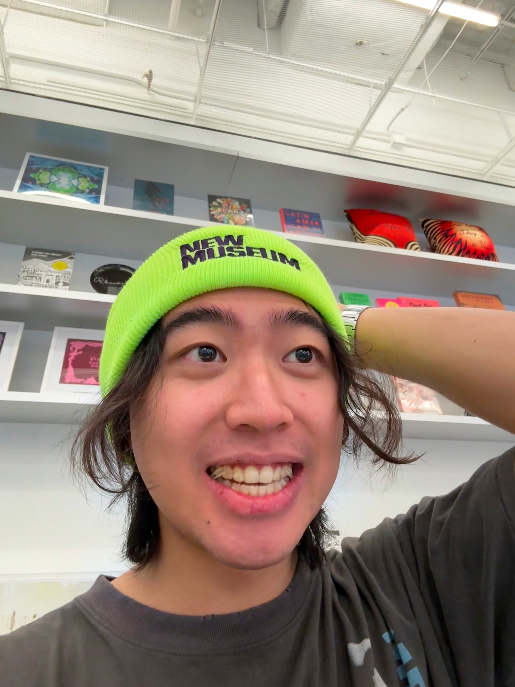

About me

About My Background
I think I’ve been design-minded for a long time, even before I knew what design really was. As a kid, I was obsessed with cars, then shoes, and eventually objects in general. What drew me in was not just how they worked, but how they looked and felt — the stance of a car, the silhouette of a shoe, or how Apple made all of its products feel visually consistent.
At the same time, I was never really the typical “art kid.” I’ve always been analytical. In grade 7, we had to design a flag for an imaginary country, and I built mine by connecting points based on thirds in a square. My teacher pointed out how analytical my process was, and that stayed with me.
For a long time, I felt like I was in this middle ground between engineering and design. My dad encouraged me toward STEM, and because I was good at physics, engineering felt like a reasonable compromise. I was inspired by people like James Dyson — someone who seemed to bridge technical thinking and design instead of choosing only one.
But in college, I started realizing that what really drives me is the human side of things: emotion, taste, story, and how ideas connect with people. That pulled me toward branding and experience. Through X Academy, I saw how powerful narrative and public communication can be in moving people and making something feel meaningful.
More recently, I’ve noticed that even in small ways, like posting Instagram stories with my thoughts, I really enjoy sparking emotional responses and conversations. When people reply genuinely, compliment the way I think, or start a real conversation from something I shared, it gives me a lot of energy. It made me realize that I may be drawn not only to making things, but to shaping the ideas, stories, and experiences around them.
So now, I don’t see myself as only a product designer. I’m interested in the space between design, storytelling, brand, and creative strategy — turning ideas into experiences people can feel, remember, and care about.